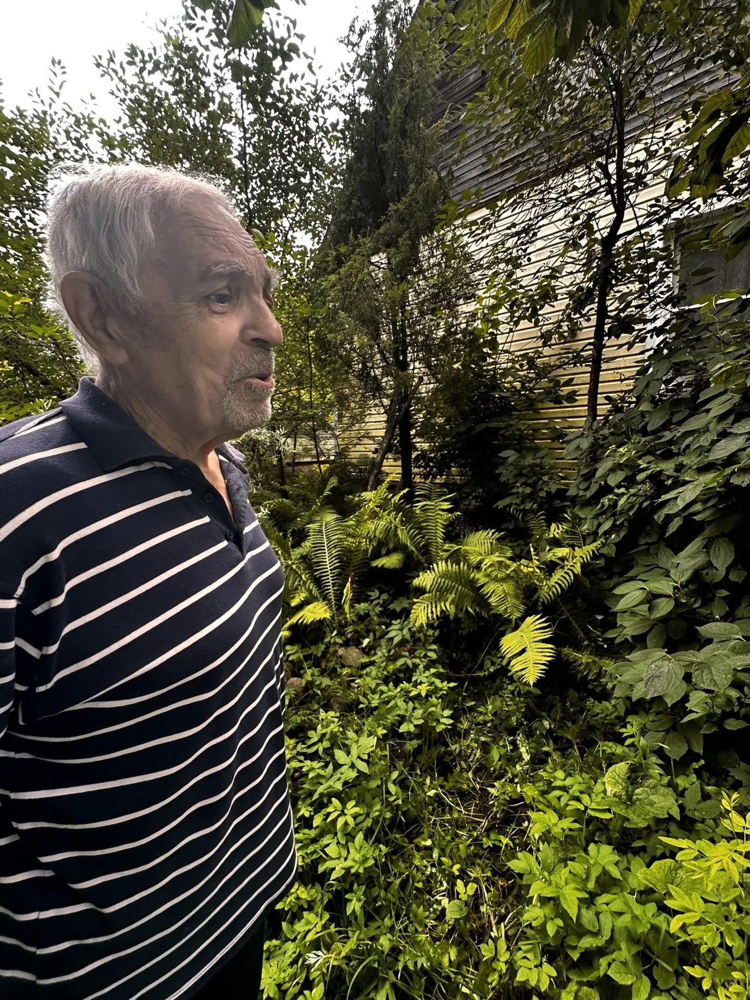

История двух чугунных стражей, переживших войну и обретших новую жизнь. Если вы когда-нибудь гуляли по Невской Дубровке, то наверняка видели фонтан у храма. На двух его гранитных выступах гордо восседают каменные львы. Они смотрят в сторону Невы, словно охраняя покой поселка. Но мало кто знает, что за их каменными спинами — целая эпоха, полная тайн, трагедий и чудесных спасений.

Гости из прошлого: усадьба Мордвиновых
Наша история начинается задолго до революции. На высоком берегу Невы располагалась усадьба помещиков Мордвиновых. Именно там и поселились два чугунных льва. Они были отлиты примерно в 1880-х годах. Местные легенды гласят, что в Дубровку скульптуры приплыли на барже. При разгрузке произошло ЧП: лопнул трос, и тяжелая чугунная махина чуть не рухнула на рабочих. Один из них, не раздумывая, бросился под скульптуру и удержал её собой. Смельчак сломал ребра, но спас и льва, и товарищей. Помещик оценил героизм рабочего и выделил на его лечение 10 рублей — по тем временам немалые деньги. Львы Дубровки были очень похожи на своих собратьев с ограды усадьбы Кушелевых-Безбородко на Свердловской набережной в Петербурге. У них даже сохранились отверстия для цепей, хотя самих цепей в Дубровке никогда не было. Смотрители говорят, что у наших львов, в отличие от петербургских, были одинаковые, чуть насмешливые улыбки.

Свидетели эпох: Дом культуры и война
После революции львы сменили прописку — они украсили вход в местный Дом культуры. Именно там они «видели» композитора Исаака Дунаевского, который был депутатом в Дубровке, слушали песни пионеров и наблюдали за танцующими парами в парке. Это было мирное, счастливое время. Но 22 июня 1941 года всё оборвалось. Началась война. Львы осиротели: жителей эвакуировали, а Дом культуры сгорел под обстрелами. Каменные стражи не могли убежать. Они видели пожары, слышали взрывы и видели смерть поселка. Взрывами снарядов их разбросало по сторонам. После войны один из львов был найден. Его поставили у дома инспектора, а в 1956 году, когда открыли среднюю школу, торжественно водрузили на постамент перед учебным заведением. Рядом разбили скверик. Лев снова слышал детские голоса, но теперь он был один. Судьба второго льва неизвестна до сих пор: кто-то говорит, что он у местных жителей, а кто-то — что он навсегда остался под землёй.

Вандализм и спасение
В лихие 90-е Дом культуры сгорел, а одинокого льва сбросили с постамента вандалы. В 1996 году на этом месте начали копать траншею под канализацию и вызвали экскаватор. Казалось, что история «защитника правого берега» закончится в ковше землеройной машины. Но нашёлся спаситель. Учитель географии Владимир Чижов упросил рабочих перенести скульптуру к нему на частный участок. Так чугунный лев поселился в саду, в зарослях папоротника, где и находится по сей день. На его морде до сих пор видны следы от осколков, а передняя лапа повреждена.

Новая жизнь: фонтан и китайские копии
В 2010 году на месте сгоревшего Дома культуры построили Храм в честь иконы Божией Матери «Взыскание погибших». А в 2018 году у храма установили фонтан в форме жёлудя, символизирующий мужество защитников Невской Дубровки. Именно тогда и появились те самые каменные львы, которых мы можем видеть сегодня. Оказалось, что скульптуры для фонтана — это точные копии тех самых львов Мордвиновых. Размеры для них снимали с настоящего чугунного льва, который живет в саду у Владимира Чижова. Новые скульптуры сделаны из камня по заказу китайскими мастерами. На фонтане есть табличка, на которой написано: «Львы-хранители Невской Дубровки. Львы- точные копии львов дубровской мызы Кинь-Грусть усадьбы Мордвинова, которые уцелели во время боёв на Невском пятачке. Один лев до 1995 года стоял у здания Дубровской школы, второй безвозвратно утрачен. Навершие фонтана в форме жёлудя, окаймлённого дубовыми листьями, символизирует мужество защитников Невской Дубровки. Фонтан восстановлен в 2018 году на историческом месте на средства благотворителей».

Наши поиски и надежда на будущее
Когда мы начали работать над этим проектом, мы даже не предполагали, что история окажется настолько живой. Мы хотели найти легендарного льва, и нам это удалось! Мы познакомились с Владимиром Пантелеймоновичем Чижовым, хранителем музея «Невский пятачок», который спас скульптуру. Мы видели льва своими глазами — он хранит память о героических событиях, но не может о них рассказать. К сожалению, вскоре после нашей встречи Владимира Пантелеймоновича не стало. Теперь мы особенно переживаем за судьбу скульптуры. Мы очень надеемся, что семья хранителя передаст льва в местный музей. И тогда, возможно, со временем с таблички на фонтане исчезнет фраза «безвозвратно утрачен», ведь где-то всё ещё есть второй лев, и наш герой тоже должен сохраниться для будущих поколений. Львы-хранители Дубровки — это не просто украшение. Это немые свидетели нашей истории, которые учат нас помнить, ценить мир и беречь то, что осталось от прошлого.